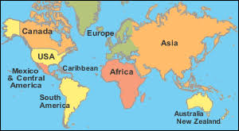

MAP
Here is a little map to guide you to our school. Images inserted to ease the process.
If you are already in the milky way head to our solor sysyem
From there,head to the third planet from the sun.
At this point you should be on earth . So just head to the second biggest countinent known as Africa 
And when in Africa move towards the East till you find Uganda a land locked country
At this point search for Kampala
This building is the school and voila your here.

BON VOYAGE